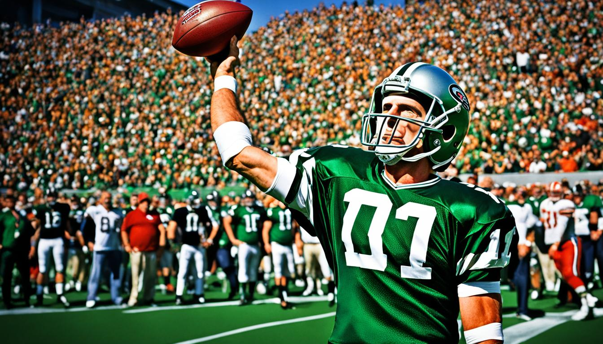
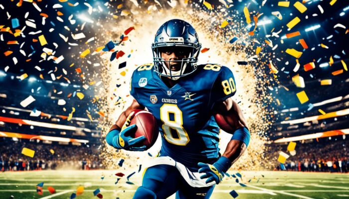
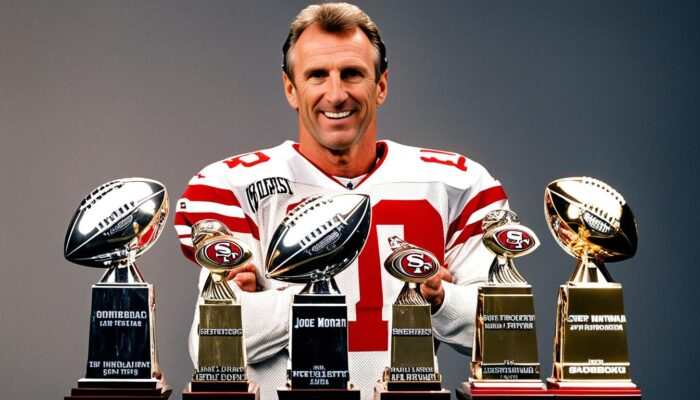
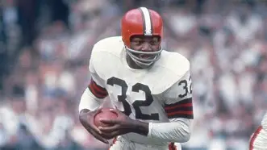
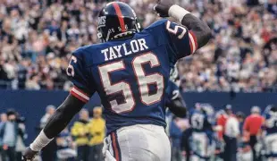

As maiores estrelas da historia da NFL

Tom Brady nasceu em San Mateo, Califórnia, em 3 de agosto de 1977. Ele é conhecido como o quarterback lendário com a carreira mais vitoriosa na NFL. Com sete títulos do Super Bowl, Brady solidificou seu status como uma lenda. Brady ganhou o prêmio de MVP da NFL três vezes e foi eleito MVP do Super Bowl cinco vezes. Ele participou de 15 Pro Bowls, mostrando sua consistência e desempenho de elite. Brady é líder em passes para touchdown entre os quarterbacks do New England Patriots. Sua camiseta #12 foi aposentada pela equipe. Ele foi escolhido para o NFL 2000s All-Decade Team e NFL 2010s All-Decade Team.

Jerry Rice é mais que um recordista da NFL; ele é um wide receiver incrível. Sua carreira o fez ser um ícone esportivo. Ele teve muitos recordes em recepções, jardas e touchdowns. Ele jogou no San Francisco 49ers e formou dupla com Joe Montana. Juntos, eles ganharam três Super Bowls. Rice também foi escolhido para o Pro Bowl treze vezes.

Joe Montana, conhecido como “Joe Cool”, é uma lenda da NFL e ícone do San Francisco 49ers. Ele jogou por 16 anos e levou seu time a quatro Super Bowls, ganhando todos. Montana teve 40.551 jardas de passe e 273 touchdowns, com apenas 139 interceptações. Sua serenidade e precisão o tornaram único. Ele foi MVP do Super Bowl três vezes e da temporada regular duas vezes. Montana liderou a NFL em passes para touchdown em 1982 e 1987. Foi o melhor em rating de passador em 1987 e 1989. Ele foi para o Pro Bowl oito vezes e foi escolhido para o primeiro time All-Pro três vezes. .

Jim Brown é visto como o melhor corredor da NFL de todos os tempos. Ele levou o Cleveland Browns ao título em 1964, antes da criação do Super Bowl. Essa conquista ainda é lembrada pelos fãs da NFL. Jim Brown teve um grande impacto não só coletivo, mas também individual. Ele foi eleito MVP da NFL por três anos. Isso mostra sua supremacia no futebol. Sua média de cem jardas por jogo é incrível. Isso mostra sua habilidade e consistência. Veja os números impressionantes de Jim Brown:

Lawrence Taylor jogou pelo New York Giants de 1981 a 1993. Ele foi uma lenda na defesa revolucionária da NFL. Seu estilo agressivo e incomparável mudou a forma de jogar o linebacker. Ele acumulou 28 pontos em um ranking de jogadores da NFL. Isso o colocou em 4º lugar entre os melhores jogadores. Veja como suas conquistas se comparam a outras lendas do futebol americano.